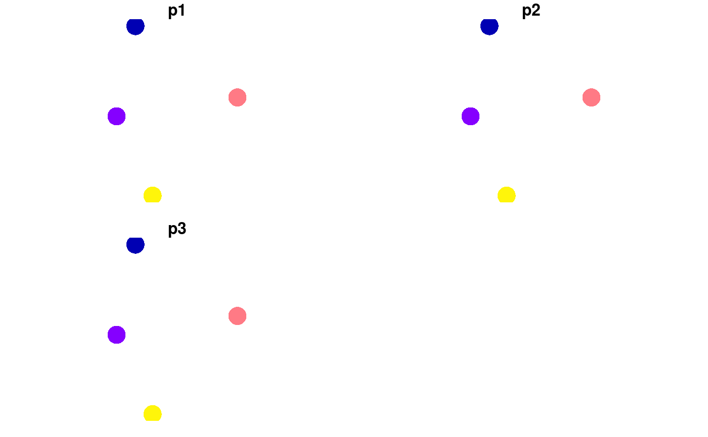
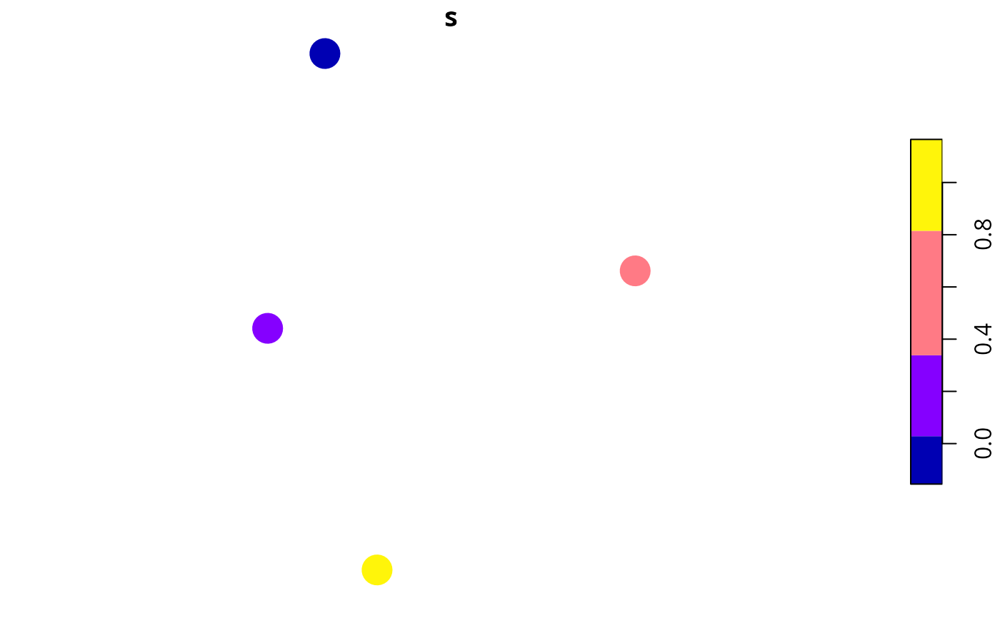

R/relative_site_richness_scores.R
relative_site_richness_scores.RdCalculate relative site richness scores. Sites with greater scores are predicted to be more likely to contain more species. Note that these scores are relative to each other and scores calculated using different matrices cannot be compared to each other.
relative_site_richness_scores(site_data, site_probability_columns)
| site_data |
|
|---|---|
| site_probability_columns |
|
numeric vector of richness scores. Note that
these values are automatically rescaled between 0.01 and 1.
The relative site richness scores are calculated using the following procedure:
Let \(J\) denote the set of sites (indexed by \(j\)), \(I\) denote the set of features (indexed by \(i\)), and \(x_{ij}\) denote the modelled probability of feature \(i \in I\) occurring in planning units \(j \in J\).
Next, we will sum the values for each site: \(y_j = \sum_{i \in I} x_{ij}\).
Finally, we will linearly rescale the \(y_j\) values between 0.01 and 1 to produce the scores.
# set seed for reproducibility set.seed(123) # simulate data for 3 features and 4 planning units x <- tibble::tibble(x = rnorm(4), y = rnorm(4), p1 = c(0.095, 0.032, 0.5, 0.924), p2 = c(0.023, 0.014, 0.4, 0.919), p3 = c(0.075, 0.046, 0.9, 0.977)) x <- sf::st_as_sf(x, coords = c("x", "y")) # print data, # we can see that the fourth site has the highest modelled probabilities of # occupancy across all species print(x)#> Simple feature collection with 4 features and 3 fields #> geometry type: POINT #> dimension: XY #> bbox: xmin: -0.5604756 ymin: -1.265061 xmax: 1.558708 ymax: 1.715065 #> epsg (SRID): NA #> proj4string: NA #> # A tibble: 4 x 4 #> p1 p2 p3 geometry #> <dbl> <dbl> <dbl> <POINT> #> 1 0.095 0.023 0.075 (-0.5604756 0.1292877) #> 2 0.032 0.014 0.046 (-0.2301775 1.715065) #> 3 0.5 0.4 0.9 (1.558708 0.4609162) #> 4 0.924 0.919 0.977 (0.07050839 -1.265061)# calculate scores s <- relative_site_richness_scores(x, c("p1", "p2", "p3")) # print scores, # we can see that site 4 has the highest richness score print(s)#> [1] 0.04665323 0.01000000 0.62983871 1.00000000